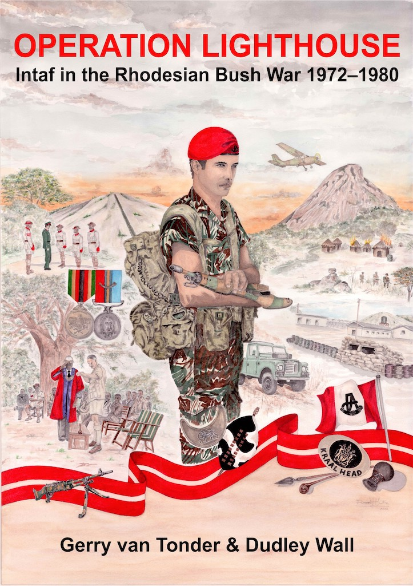
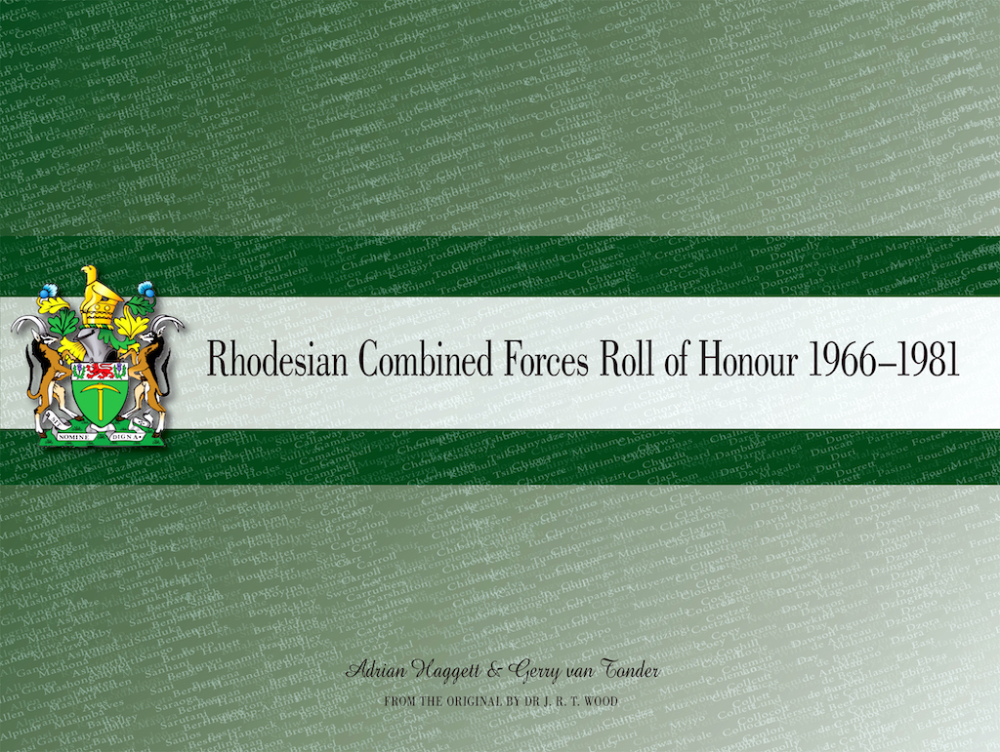
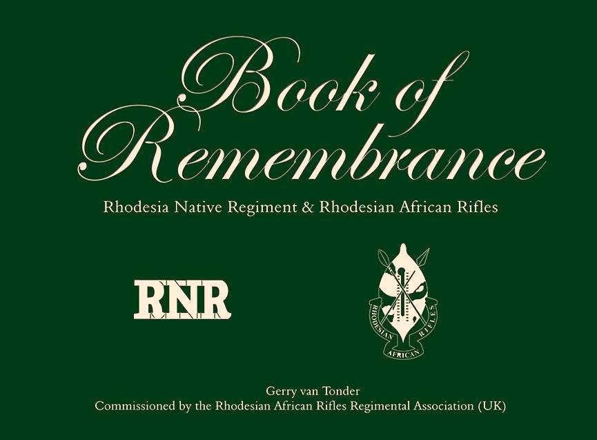
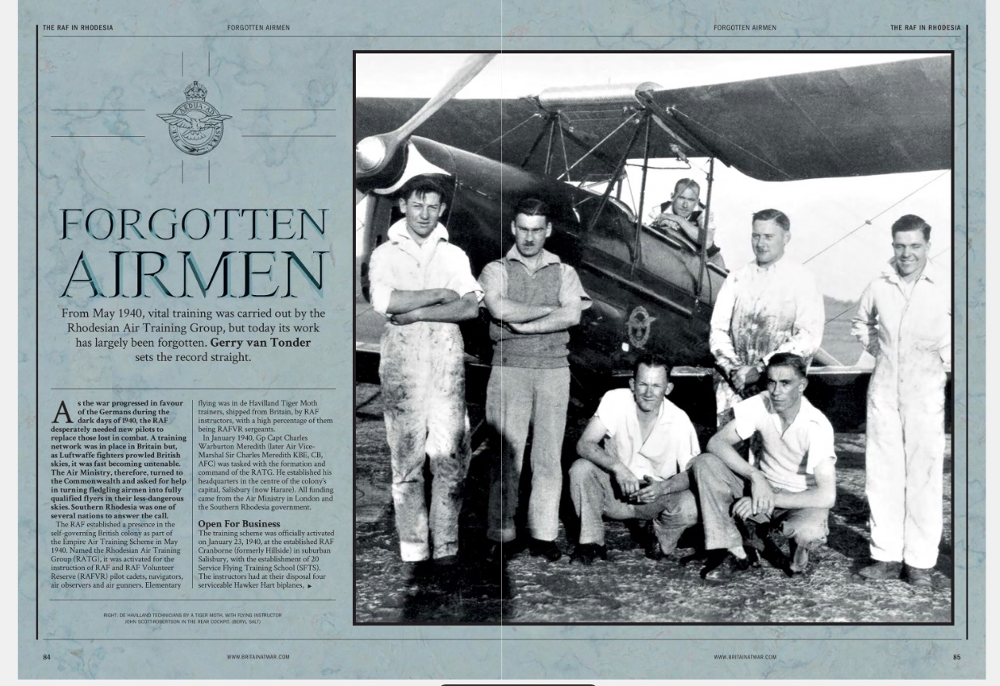
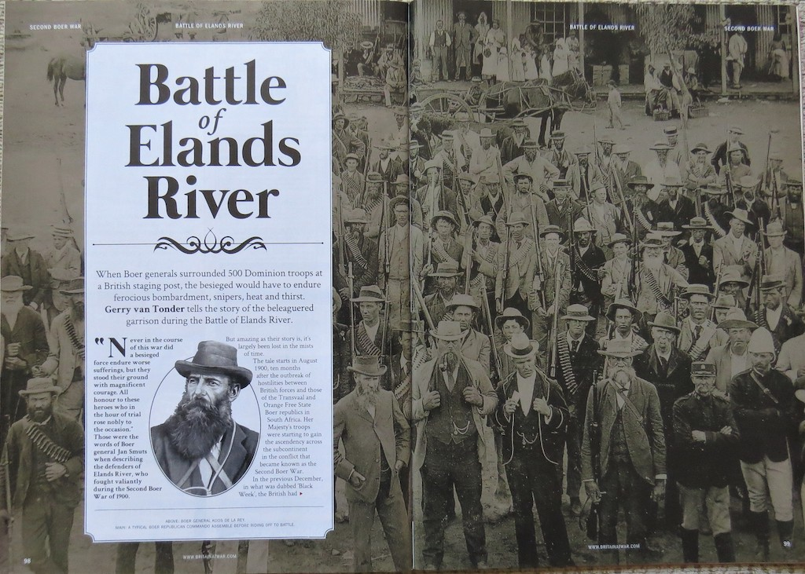
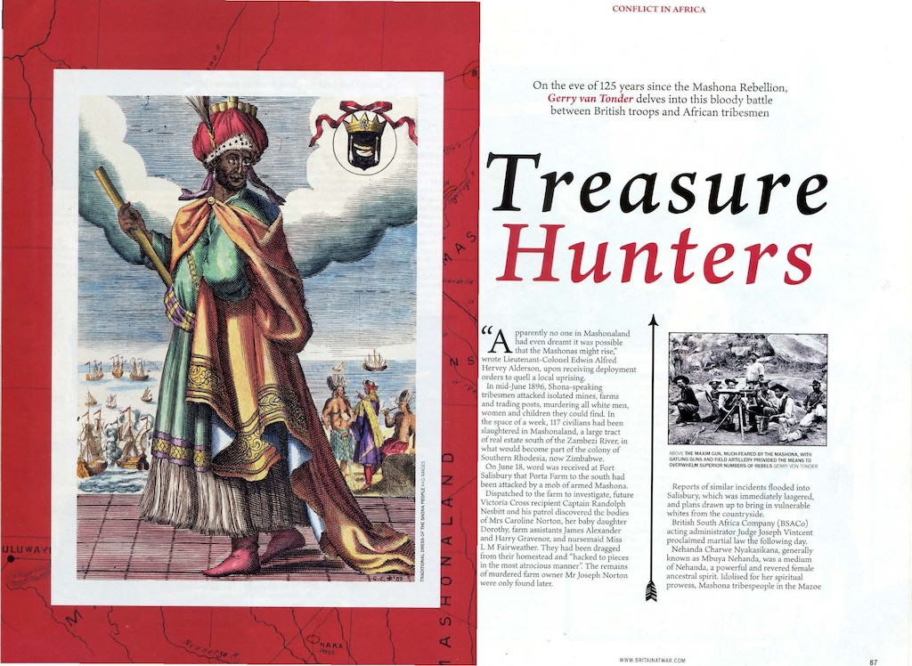
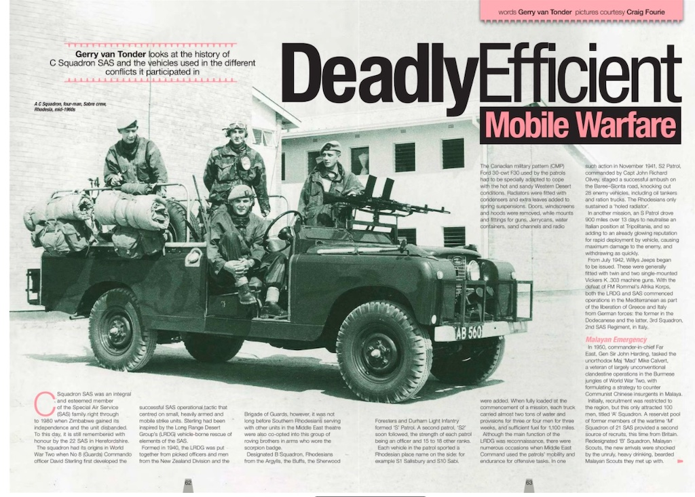
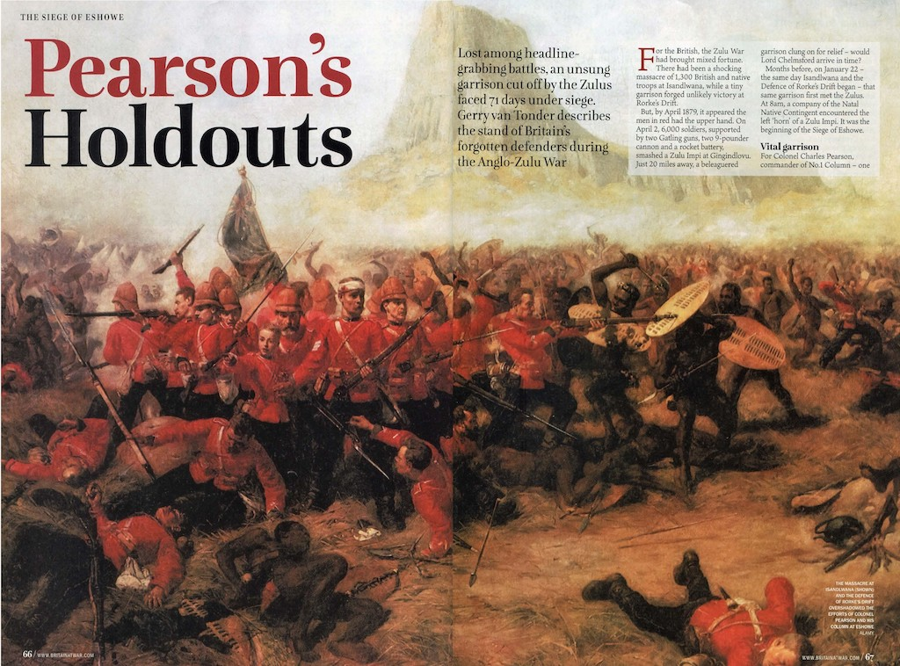
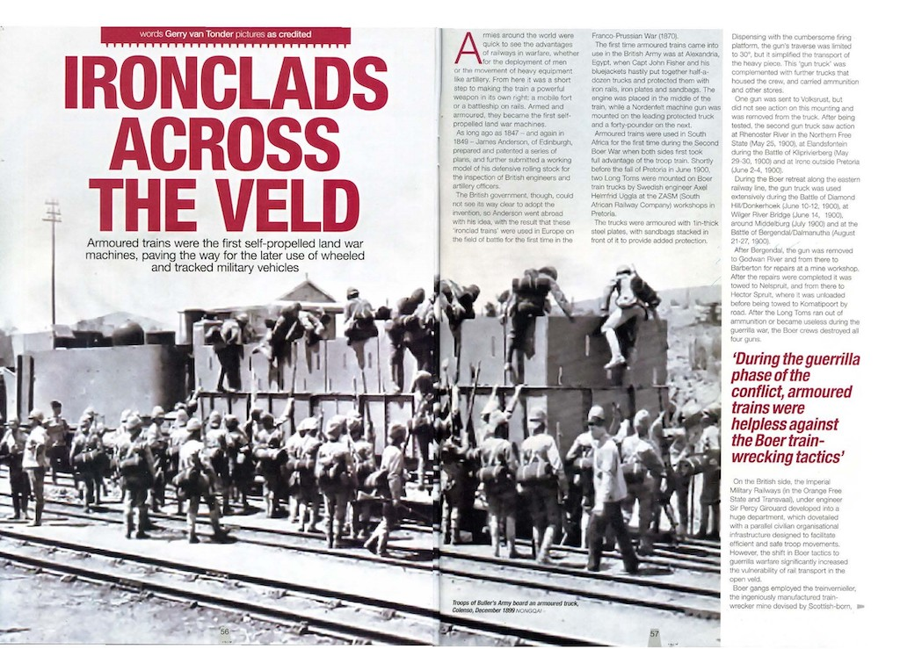
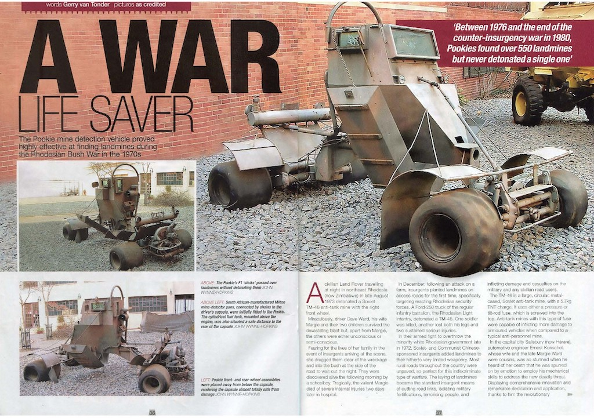

Africa
Books
LT-GEN KEITH ROBERT COSTER SSAS, ICD, OBE: A Life in Uniform

In August 2015, the late former commander of the Rhodesian Army (1968–1972), Lt-Gen Keith Coster’s son, Steve, and daughter-in-law, Cindy, approached me, wanting to know if I would like to take custody of personal memoirs, photographs, letters, certificates, records and some items of uniform that had belonged to the general. It was their wish that the collection find a permanent home in a Rhodesian museum. Suffice to say, I very readily accepted their magnanimous offer. In return, I promised them that I would construct a fact file on the military life of the general, so that a permanent record could be established.
The full-colour, coil-bound, 265-page file mainly comprises information and photos that have never before seen the light of day, let alone be published. General Coster’s life in uniform, as I titled it, was, for me, a massive revelation. I have now fulfilled my promise to the family who, on receiving the fact file, as their endorsement, said:
Hi Gerry, I have just downloaded your magnificent work on my dad. You have truly done a remarkable job of compiling all that history and information. It’s amazing what you have unearthed, well over and above that we supplied you! It will take me some time to go thru and absorb all the detail, but I wanted to say a huge a thank you for your efforts on behalf of our family. It will remain a fantastic legacy of his life.
I am sure his grandchildren, other relatives and friends will find the work fascinating, and will enjoy reading this detailed history of his life.
With grateful thanks, Steve Coster
Hi Gerry, A Huge Thank You for all the work you’ve put in and the magnificent tribute that you’ve put together – I know that Dad would have approved! I haven’t read much of it yet but it really is a wonderful memoir of Dad’s life. Thanks again for your huge effort and the many hours it took you to put it all together. Kind regards and keep safe, Cindy Coster
In 1938, Keith Coster went into uniformed service in South Africa and earned his wings. In 1942, he was shot down in North Africa, and spent the rest of the war incarcerated in various Italian and German prisoner of war camps, including the famous Stalag Luft III of Great Escape fame. At the end of the war, he transferred to the South African army, and from there, with the rank of major, left South Africa in 1955 to join the Federation of Rhodesia and Nyasaland army, where he rose to the rank of lieutenant-colonel, commanding officer of the 2nd Battalion, the King’s African Rifles, based in the then Nyasaland.
With the demise of the Federation in 1963, it was a natural progression for him to transfer to the Southern Rhodesian Army. In 1968, and with the rank of lieutenant-general, he was appointed general officer commanding of the Rhodesian Army, a post he held until his retirement in 1972. He then went back to South Africa, where he spent thirteen years serving as a ‘civilian officer’ in the top national security organs of that country, for which he was bestowed with South Africa’s highest award, the Star of South Africa.
The file is brim-full of his personal accounts: pilot training, encounters with German aircraft, being shot down and taken prisoner; his experiences as a POW; the Rhodesian Army, including papers on security; a brush with a Russian spy while working for South African state security; and much, much more.
What an amazing military life, which I now wish to share as it is a vitally important part of Rhodesian military history. I have gone a private printing route, based on print-to-order. If you wish me to have a copy printed for you, please e-mail me on g.van-tonder@sky.com
Publisher: Gerry van Tonder (2017)
Paperback: 260 pages
North of the Red Line: Recollections of the Border War by Members of the SADF and SWATF: 1966–1989

Over the years, much has been written about individuals and the forces and their operations in what became commonly known as South Africa’s Border War, or Grens Oorlog, but never before has the human spirit of this 23-year-old conflict been so graphically and unashamedly captured and chronicled as in this book. Equally unique, was the exclusive use of social media to invite and encourage individuals to tell their personal stories, without apology or recrimination, and so provide an indelible oral history of the war. Over a period of three years, 21,000 of them spoke.
Amongst others across the defence forces spectrum, national service ‘troopies’, permanent force officers, aviators, aircrew, medics, submariners and padres, used Facebook to openly relate their experiences and to bare their souls and inner feelings. The unthinkable and improbable then happened. Erstwhile antagonists also stepped up to the plate, placing their own personal first-hand experiences amongst those of their enemies of yesterday: Russians, Cubans, Angolans and members of SWAPO shared aspects and perspectives of their war, and in doing so, also facilitated the corroboration of incidents and events.
People from all arms and units of the South African defence forces were either consulted or actually contributed, resulting in a landmark compilation of personal anecdotes from the Border War. The story is further enriched by the inclusion of a rich plethora of hitherto unseen ‘unofficial’ photographs of stolen memories in a war situation where the taking of any such photographs was strictly prohibited. Veterans unabashedly wear their hearts on their sleeves, speaking of the psychological impact of untold tragedy and grief; of bravery and unmitigated fear; of shenanigans and mischievous escapades to relieve the pressures of war; of miracles and fate; of camaraderie and the brotherhood of the human spirit.
Their journeys are filled with tears, laughter, immense danger, pranks, poignancy, love and sorrow, but above all, it is the story told by those who were there, and the legacy of that war that remains in countless lives.
Publisher: 30 South Publishers (2016)
Paperback: 568 pages
ISBN: 9781928211976
OPERATION LIGHTHOUSE: Intaf in the Rhodesian Bush War 1972–1980

From 1890 and throughout its history, the men of Internal Affairs were bound by an intense loyalty to each other, combined with a deep understanding of the tribal people in their charge. Their greatest strengths were individuality and self-reliance, strengths that were called upon to the fullest during the rebellions of 1896–97, and again in the conflict of the 1970s. With verbatim first-hand accounts and anecdotes from Intaf staff at all levels, this book chronicles Intaf’s rapid forced conversion in the 1970s from the original dedicated and efficient district civil administration, to a paramilitary force tasked with carrying out normal administrative functions in abnormal situations.
Despite inadequate weaponry and insufficient training, Intaf was all too frequently the only armed presence. There were just not enough security forces to go around.
All elements of Intaf’s activities are melded in the book to give a picture of one of the least-known and least-understood aspects of Rhodesia’s war against the guerrilla insurgents: the role of Intaf. This book serves to set the record straight.
Intaf’s first priority was to defend the tribesmen and maintain the administration. In this task Intaf should have been supported by the military forces which, in common with much of the hierarchy in Salisbury, did not understand Intaf’s true role. Eventually Intaf found itself operating in support of the military or, in the absence of the army, acting independently in a military role. Detailed sections on weaponry, vehicles, military training, mine warfare, counter-terrorism operations and the protected villages programmes reveal this transformation. Ultimately, Intaf’s role saw the creation of provincial counter-insurgency units especially trained to seek and destroy communist-trained insurgents.
This book is a tribute to the tenacity and loyalty of all who served in Intaf, and their wives and families; the National Servicemen, the Vedettes, Community Advisers, Field and ADF staff, the regular members. With very little acknowledgment, support or recognition, they gave everything to the enormous dangerous tasks they faced.
As the traditional, almost paternal, guardian and custodian of these people, all the staff of Intaf found themselves at the forefront of this conflict. A virtual identity crisis arose, as they desperately, and against increasingly difficult odds, struggled to maintain a semblance of civil administration on the one hand, whilst performing armed and uniformed defensive and openly combatant roles on the other. Included are full Honours and Awards, including citations, and a comprehensive Roll of Honour. Fifty-four colour and black and white plates provide a thorough pictorial history.
If you wish me to have a copy printed for you, please e-mail me on g.van-tonder@sky.com
Publisher: Gerry van Tonder (2017)
Paperback and electronic: 512 pages
ISBN: 9781928211976
Rhodesian Combined Forces Roll of Honour 1966-1981

The intention of this publication is to honour all who lost their lives in action, or while on active service, with the Rhodesian Security Forces during the period 1966–1981. This publication represents the single most comprehensive Rhodesian Combined Forces Roll of Honour covering the so-called Bush War.
Many people have researched the casualties of the Rhodesian Bush War and it is highly unlikely that a single researcher will ever compile a definitive list of all those who perished. Dr J.R.T. Wood produced the first Roll of Honour of the Rhodesian Combined Forces while many others, including Gerry van Tonder and Adrian Haggett, have used his roll as a base for expansion, correction and addition. What was astonishing during our research, was the absolutely enormous number of errors and inaccuracies I discovered in Richard Wood’s original roll, including a Bronze Cross of Rhodesia recipient who in fact was alive and well and living in Bulawayo!
Names of our African comrades in arms were horribly mutilated, showing a gross misunderstanding by so many of the culture and tradition of Rhodesia’s black folk. There were countless entries where only a first name was given, eg Private Dick, or Corporal George, or Sergeant Thomas. What a travesty. These men all had family names, often using their mutupo or isibongo, chiShona and isiNdebele respectively for their totem as their ‘surnames’.
This publication represents a complete break away from the traditional roll of honour which I refer to as a telephone book: a cold list of numbers and names. Our objective was to personalise the now 2,500 entries of the roll of honour. A monumental task, often testing our own emotions as family members open up and relive the lives of loved ones killed during the Bush War. But for me, the tears dried and a deep sense of achievement followed, knowing we have bestowed the ultimate honour on our war dead. For Gerry van Tonder the project remains active. Since publication, Gerry has doubled the volume of data as fresh information continuously comes to hand.
Publisher: 30 South Publishers (2011)
Hardback and paperback: 152 pages
ISBN: 9781920143756
Rhodesia Native Regiment and Rhodesian African Rifles 1916-1981: Book of Remembrance

Over the years since 1980 when Rhodesia became Zimbabwe, much has been written and recorded about the various regiments that served the country of Rhodesia from the early pioneers in the 1890s, right through to the day that these fine units marched off their respective parade grounds for the last time and into the august annals of history.
Much of this service for the older regiments, such as the Rhodesia Regiment, the British South Africa Police, the Rhodesia Native Regiment and the Rhodesian African Rifles, was as a contribution to the British Empire’s war efforts during the South African War,both World Wars, and other regional conflicts of the 1950s and 1960s. This Book of Remembrance, however, has been specifically compiled as a lasting tribute to the men of the Rhodesia Native Regiment (RNR) and its successor the Rhodesian African Rifles (RAR) who, during the proud and honourable life of these units, made the ultimate sacrifice. It is not a definitive history of these regiments, as this has been admirably done in books such as Masodja and Ragtime Soldiers, to mention just a couple.
Accordingly, the book briefly looks at the history of each of the regiments and their battalions, with pictorial depictions of uniforms, badges, theatres of operation and colours. Chapters are also dedicated to those who received honours and awards for bravery and dedication to duty, with citations where it has been possible to source. Nominal rolls, some incomplete, of Commanding Officers, officers and senior non-commissioned officers add to the overall remembrance theme of the book. The main content is the various Rolls of Honour, covering all the major conflicts and areas of operation in which the two units saw active service. Differing from the standard cold lists of names and numbers, where possible, the rolls carry more information about causes of death and places of final burial, important aspects of personalising individual entries. The book will therefore itself be a memorial record for generations to come.
The Rhodesian African Rifles Association (UK) has made the decision to erect a memorial to the RNR and RAR at the National Memorial Arboretum near Alrewas in England, already the home to a fine memorial to the British South Africa Police. The NMA Trustees have approved, in principle, the proposed memorial, pictured below. In April 2012, a tree-planting ceremony was held on the grounds of the 150-acre NMA to commemorate these two regiments. A plaque next to the tree honours those of the RNR and RAR who served Crown and country.
In May 2012, Brig Dave Heppenstall, former commanding officer of 1st Battalion RAR, approached me to see if I would author a Book of Remembrance, which will not only primarily be used as an important fund-raiser for the NMA memorial, but will be deposited in the NMA Chapel as part of our sacred duty to those of the RNR and RAR who paid the ultimate sacrifice for their country and for mankind. I accepted the honour and privilege to help preserve the memory of those brave men of the Rhodesia Native Regiment and Rhodesian African Rifles. Colour and B&W plates show the uniforms and insignia of the regiment over time, together with detailed operational maps and photos of the units on active service.
Publisher: 30 South Publishers (2015)
Hardback: 88 pages
ISBN: 9781928211730
The Rhodesia Regiment: 1899-1981

As the 19th century and Queen Victoria’s long reign drew to a close, volunteer squadrons of the Rhodesia regiment, recruited by Colonel Baden-Powell, were positioned along the border with Bechuanaland, to defend Rhodesia against Boer aggression. In 1914 Rhodesians again rallied to the Crown with the formation of two battalions of the Rhodesia Regiment to counter the German presence in South West and East Africa. Shortly after, many volunteered to join the Allied forces on the Western Front.
During the Second World War the indomitable combat prowess and leadership talents of Rhodesia Regiment volunteers were strongly evident in many theatres, including North Africa, Somaliland, the Middle East, Italy, the Adriatic, Western Europe and South East Asia.
In 1947 the Crown bestowed the ultimate accolade, with the title ‘Royal’ prefixed to the regiment. Through the 1950s and ’60s, the experiences of Rhodesians in successive areas of conflict—Malaya, Suez, Aden and Nyasaland—significantly enhanced aspects of Rhodesia’s territorial army, particularly with regard to counter-insurgency warfare. Conscription ensured combat-readiness for the growing number of battalions and independent companies established throughout the country, providing a solid basis for the regiment to play a vital role in countering the ZANLA/ZIPRA guerrilla insurgencies of the 1960s and ’70s.
Such is the 81-year-old story of a proud territorial unit, the Rhodesia Regiment, now written and preserved for posterity, encapsulating the memory of all those who served in the regiment as well as those who laid down their lives for their country, many in foreign lands. Coordinated by Hugh Bomford, this definitive history has, over a period of seven years, been compiled by a core group of dedicated people, with over 400 other contributors. On 5 August 2014, after Her Majesty had confirmed that she would personally like a copy of the book, a delivery was made by Gerry van Tonder in a visit to Buckingham Palace.
Publisher: 30 Degrees South Publishers (2014)
Hardback: 618 pages
ISBN: 9781920143893
Magazine articles
Homegrown Solutions: Rhodesian Military Vehicles 1965–80
Classic Military Vehicle November 2019

In the 1960s, the right-wing minority government of Southern Rhodesia (now Zimbabwe) refused to acquiesce to calls for majority rule, electing instead to unilaterally declare itself independent of Britain on 11 November 1965. Almost immediately, nationalist insurgents started to cross into Rhodesia from Zambia to use military means to force the government into submission.
Rhodesia’s security forces commenced ‘border-control’ operations, successfully eliminating whole gangs of poorly equipped guerrillas or ‘terrorists’, the term used by the Rhodesians. Troop deployments and motorised patrols were conducted using standard, ‘soft- skinned’ vehicles such as the Land Rover, Bedford RL trucks and Ford International F250s. Where the terrain permitted, Ferret scout cars were employed.
Then over Christmas 1972, events in the Centenary commercial farming area north- west of the capital Salisbury (now Harare) would permanently change the manner in which the Rhodesians prosecuted counter-insurgency operations throughout most of rural Rhodesia. Members of the Rhodesian Light Infantry (RLI) and ‘C’ Squadron, Special Air Service (SAS), responded to attacks on two farm homesteads, during which an RLI F250 detonated an anti-tank landmine planted by the guerrillas. One soldier died of his injuries two days later, while another lost both his legs.
The Rhodesian security forces were completely unprepared for this type of warfare. Landmines—predominantly the Soviet-made TM-46—together with RPG-7 anti-tank rocket grenades employed in ambushes, exposed the inadequacy of existing vehicles. In a short space of time, and while isolated through international economic sanctions, local private enterprise and the military addressed the need for a range of vehicles that would afford the occupants protection from both landmines and ambush fire. As the guerrilla war escalated to engulf vast tracts of the Rhodesian countryside, where most roads were untarred, specialist factories rolled out a veritable ‘menagerie’ of locally designed and constructed mine- and ambush-protected (MAP) vehicles: Rhino, Hyena, Leopard, Kudu, Cougar, Crocodile, Puma. Attention was turned to applying mine protection to the existing, standard configuration Land Rover body and chassis. This entailed affixing steel blast-deflector plates behind the front wheel arches as well as deflectors shielding the rear wheels. Industrial conveyor belting was fitted across part of the rear cab window to also absorb blast from a rear-wheel detonation. The cab was further protected by a framework of roll-bars, made up of 32mm steel water piping. This served to protect the occupants should the blast overturn the vehicle. Seatbelts were also fitted and the wearing thereof made compulsory. The key to affording maximum protection for small numbers of vehicle occupants was to provide an armour-plated and roll bar-encased capsule, carried above offset front and rear wheel assemblies. Considerable time and personal resources to the development of such a mine-protected vehicle, with hours spent examining the wrecks of vehicles which had detonated landmines. This resulted in 1974 in the ‘Leopard’, a custom-built, mine-protected monocoque—French for ‘single shell’—unit, which could carry five passengers. It was powered by a relatively inadequate Volkswagen engine and Type-2 VW Kombi gearbox and an external fuel tank set well to the rear.
In 1975, another commercial enterprise came up with their version of a Rhodesian landmine-protected vehicle by designing the ‘Kudu’; originally the ‘Ojay’. The main characteristic of this Land Rover or Nissan 4x4 chassis-mounted vehicle, was the zigzag or concertina bullet deflectors on the sides of the capsule; with a bit of fertile imagination, this also resembled the corkscrew shape of the horns of an African antelope, the kudu.
At this stage of the war, the Kudu became the only mass-produced mine-protected vehicle in Rhodesia. With a passenger capacity of five to eight in addition to the driver, the powerful Nissan motor often led to speed restrictions or governing of the Kudu. Many criticised the Kudu for being both top-heavy, and therefore unstable and awkward to drive, with limited driver vision through the relatively small bullet-proof windscreen. As with the Rhino, there was also a railway variant.
Whilst the mainstay of military heavy vehicles and troop carriers was initially from the Bedford and Mercedes stables, almost all other paramilitary and government departments, including the BSAP, had a fleet of centrally maintained 7-ton Isuzu and Nissan trucks. The chasses of these vehicles became the base for the mine-protected and armour-plated (MAP) ‘Crocodile’ and ‘Puma’ troop carriers.
Using the Rodef-25 Unimog chassis, the Rhodesian security forces had no qualms about copying the design of the West German UR-416 developed by Rheinstahl Maschinenbau. Although not anti-landmine protected, the ‘Pig’ was a heavily armed fighting vehicle, favoured on cross-border raids on guerrilla rear bases. It was fitted with three pivot mounts for Belgian-made, 7.62 mm, FN MAG general-purpose machine guns. It could also be equipped with twin AN/M2 12.7mm anti-aircraft guns or modified Hispano 20mm cannon.
Towards the end of hostilities, the Rhodesians put to use several captured Soviet- made BTR-152 armoured personnel carriers. Constructed on the chassis and transmission of a ZiS-151 utility truck, the vehicle had first entered service with a number of Warsaw Pact member states in 1950, becoming the mainstay of Soviet motorised rifle battalions.
Forgotten Airmen
Britain at War February 2020

From May 1940 to March 1954, the Royal Air Force (RAF) had a functional presence in the self-governing British colony in Africa, Southern Rhodesia. As part of the Empire Air Training Scheme, the Rhodesian Air Training Group (RATG) was activated for the training of RAF and Royal Air Force Volunteer Reserve (RAFVR) pilot cadets, navigators, air observers and air gunners. Elementary flying instruction would be given on de Havilland DH.82 Tiger Moth trainers—shipped from Britain—by RAF instructors, with a large percentage of them RAFVR sergeants.
The training scheme was officially activated on 23 January 1940, at the established RAF Cranborne Air Station (formerly Hillside) in suburban Salisbury, with the establishment of No. 20 Service Flying Training School (SFTS). The instructors had at their disposal four serviceable Hawker Hart biplanes, an Audax (Hart variant) awaiting rebuilding, eight training aircraft (de Havilland Tiger Moths and others), one Tiger Moth undergoing repair and two Hornet Moths available for transport and training. The Communications Squadron had six de Havilland (DH) Dragon Rapides and three DH.85 Leopard Moth monoplanes.
Almost all of the trainees would come from Britain, with a small number accepted locally, and from the Hellenic, Royal Australian and South African air forces. Pupil pilots attended lectures on the theory of flight, aircraft engines and elementary navigation, and shown how to communicate in Morse code with a lamp. Solo flying would be introduced once a certain level of competence had been achieved, interspersed with in-flight instruction and night flying by instrument. The Elementary Flying Training School (EFTS) phase culminated in course examinations.
Successful candidates were then posted either to the Post Initial Training Wing Pool or to an EFTS. About one third of those who did not pass—an average of 6 percent—were accepted into No. 24 Combined Air Observers School (CAOS) for air-gunner training. The remainder were given trade training to be absorbed into the RATG, or were repatriated to the UK or posted to the Middle East.
Each EFTS intake comprised 320 pupils: 50 from Post Initial Training Wing (ITW) Pool and 270 directly from the ITW secondary course. The RATG set as a target 80 hours flying time at EFTS level per phase, and 160 hours at a Service Flying Training School (SFTS).
By 1941, the RATG programme had, at its disposal, 295 DH Tiger Moths at EFTS, 217 Airspeed Oxfords and 222 North American Harvards at SFTS, and 33 Airspeed Oxfords, 19 Fairey Battles and 19 Avro Ansons at CAOS. In addition, there was a DH.87 Hornet Moth, a DH.85 Leopard Moth, a DH Rapide, two Gloster Gauntlets, a Hawker Hart and a Percival Vega Gull, the latter for the communications squadron. Today, in Zimbabwe (formerly Southern Rhodesia), the Commonwealth War Graves Commission (CWGC) maintains the graves of 446 trainees who lost their lives during the RATG programme. These cemeteries are in Harare (Salisbury), Bulawayo and Gweru (Gwelo). These fatalities were almost entirely due to air crashes and collisions. Of this number, 317 (71 per cent) were RAF and RAFVR personnel. Typical of wartime recruitment, 70 per cent of aircrew fatalities were aged 26 and under, with four only 18 years old.
Battle of Elands River
Britain at War May 2020

By August 1900, ten months after the outbreak of hostilities between British forces and those of the Transvaal and Orange Free State Boer republics in South Africa, Her Majesty’s troops were starting to gain the ascendency across the subcontinent in what became known as the Second Boer War.
By the end of May 1900, and after the military disaster at Spioen Kop, Lord Frederick Roberts had embarked on his great flank march to take Bloemfontein, capital of the Orange Free State. Ladysmith, Kimberley and Mafeking were relieved, and Pretoria and Johannesburg captured.
However, in the north-west of the region there were no British troops. One of only a small handful of British officers in the area, the aging Lieutenant General Sir Frederick Carrington was placed on the staff of the South Africa Field Force and given command of the Rhodesian Field Force.
Roberts now divided the Western Transvaal operational theatre into districts, with the sole objective of mopping up pockets of Boer resistance. The Marico District, including the towns of Mafeking, Zeerust, Lichtenburg and Rustenburg, was assigned to Colonel Baden- Powell, his force comprising 1,100 Rhodesian Volunteers and British South Africa Police (BSAP).
With pockets of die-hard ‘bitter einder’ commandos scattered throughout the region, especially in the Magaliesberg, Baden-Powell deployed two mobile columns to effectively search out and neutralise these Boer units. One of these columns, the northern one, was under Colonel Plumer, with a force of 500 mounted men of the Rhodesia Regiment, equipped with four guns of the Royal Canadian Artillery. A small reserve of 100 mounted men of the BSAP was split between the two columns. In addition to this, each of 200 dismounted troops from the Rhodesia and Protectorate Regiments were held at Mafeking and Zeerust.
With the objective of occupying Rustenburg, Plumer’s column move eastwards from Zeerust via Magatosnek in the rugged Magaliesberg. This extensive range of mountains provided a substantial barrier, but several passes, referred to locally as ‘neks,’ allowed access to columns of troops with field guns. En route, Plumer left a garrison of 100 men of the Southern Rhodesian Volunteers at the drift through the Elands River. Large supplies of provisions and ammunition destined for Rustenburg and brought up by waggon from Mafeking and Zeerust would be secured at this staging post. Baden-Powell in the meantime had moved closer to Pretoria, occupying the Zilikats and Commando neks to the west of the Transvaal capital. He left behind at Rustenburg a squadron of the Protectorate Regiment under Lieutenant Colonel C.O. Hore, but a few days later Hore was ordered to retreat down the road towards Zeerust and the staging post at Elands River, as reports were being received of a large force of Boers descending on the town.
Hore’s force, made up entirely of colonials, comprised 105 men of the New South Wales Bushmen, 141 3rd Queensland Mounted Infantry, 53 Mounted Infantry from other Australian states, 201 Rhodesian volunteers and BSAP troopers under Captain Sandy Butters, and 50 African drivers. Significantly outnumbered, surrounded by high kopjes and mountains, and with only one 2.5” 7-pounder gun and two maxims to supplement their small arms, the garrison dug in, hoisted the Union Jack, and prepared themselves to defend the accumulation of stores and ammunition for which they were responsible. On 4 August, the siege commenced as the first Boer artillery shell destroyed the camp telegraph. This was followed by barrage of artillery and rifle fire from the surrounding Boers, a force of 2,000.
The men of the Elands River garrison had had to endure almost two weeks of constant attack from the Boers, spending days in roughly hewn pits, suffering from the heat and thirst and the all-pervading reek of the rotting carcasses of dead animals. Four Rhodesian Regiment troops were killed, the volunteers lost two, and a further two BSAP troopers perished during the siege. The Australians lost seven, while seven native porters were also killed. There were fifty-eight wounded.
Treasure Hunters: Mashona Rebellion 1896–7
Britain at War April 2021

In his 1898 book, With the Mounted Infantry and the Mashonaland Field Force 1896, Lieutenant Colonel Edwin Alfred Hervey Alderson of The Queen’s Own (Royal West Kent Regiment), upon receiving deployment orders to Mashonaland to assist with quelling a local uprising in that territory, somewhat prophetically observed,
Apparently no one in Mashonaland had even dreamt it was possible that the Mashonas might rise. . . that the worm might turn did not seem to have occurred too them, and the saying, ‘You only want a sjambok [whip] and a box of matches to take any Mashona kraal,’ has become proverbial. The result of this excessive contempt for the worm was that, when he did turn, the whites, taken completely by surprise and totally unprepared, appear to have gone into an almost equally excessive state of alarm.
In mid-June 1896, in Mashonaland, a name given to a large tract of real estate south of the Zambezi River, in what would become part of the colony of Southern Rhodesia and later Zimbabwe, rampaging Shona-speaking tribesmen attacked isolated mines, farms and trading posts, brutally murdering all white men, women and children they could find. In the space of a week, 117 civilians had been slaughtered.
Nehanda Charwe Nyakasikana, generally known as Mbuya Nehanda, was a spirit medium of Nehanda, a powerful and revered female ancestral spirit. Idolised for her spiritual prowess, Mashona tribespeople in the Mazoe District, a short distance north of Salisbury, readily answered her call to rise up against the white settlers. She gave a guarantee that the enemy’s bullets would turn to water and prove harmless.
Insurrection in the territory commenced earlier that year when the amaNdebele in the southwest around Bulawayo rose up against the white settlers. Notwithstanding the fact that the Mashona and amaNdebele were historical enemies, actions by the latter galvanised the Mashona to follow suit.
At the time, most of the white population was scattered everywhere: on gold mines and at trading stores. British Army contingents such as the 4th (Queen’s Own) Hussars combined with local volunteer units to establish centralised defensive forts and laagers, and to conduct widespread patrols to quell the rebellion.
Deadly Efficient Mobile Warfare: Rhodesian SAS
Classic Military Vehicle October 2021

From 1941 to 1980, ‘C’ (Rhodesia) Squadron was an integral and highly esteemed member of the Special Air Service (SAS) family. Inspired by the rapid Long Range Desert Group’s (LRDG) vehicle-borne rescue of elements of the SAS, whose first mission into German-held territory ended in failure as a result of severe sandstorms, No. 8 (Guards) Commando officer David Sterling developed the extremely successful SAS operational tactic that centred on small, heavily armed and mobile strike units.
Designated B Squadron, Rhodesians from the Argylls, the Buffs, the Sherwood Foresters and Durham Light Infantry formed ‘S’ Patrol. A second patrol, ‘S2’ soon followed, the strength of each patrol being an officer and 15-18 other ranks. Each vehicle sported a Rhodesian place name on the side, for example S.1 Salisbury and S.10. Sabi. T he Canadian Military Pattern (CMP) Ford 30-cwt F30 of the patrols had to be specially adapted to cope with the very hot and sandy Western Desert conditions. Radiators were fitted with condensers and extra leaves added to spring suspensions. Doors, windscreens and hoods were removed, while mounts and fittings for guns, jerry cans, water containers, sand-channels and a radio were added. When fully loaded at the commencement of a mission, each truck carried almost two tons of water and provisions for three or four men for three weeks, and sufficient fuel for 1,100 miles.
From July 1942, Willys jeeps began to be issued. These were generally fitted with a twin- and two single-mounted Vickers K .303 machine guns. With the defeat of Field Marshall Rommel’s Afrika Korps, both the LRDG and SAS commenced operations in the Mediterranean as part of the liberation of Greece and Italy from German forces: the former in the Dodecanese and the latter, 3rd Squadron, 2nd SAS Regiment, in Italy.
In 1950, as Communist Chinese insurgents in Malaya sought to seize control, around 120 suitable candidates were selected as the Southern Rhodesia Far East Volunteer Unit (SRFEVU), redesignated ‘C’ Squadron on arrival in Malaya. the unit was also equipped with Humber Scout cars for road patrols. The armoured vehicle was armed with a Bren light machine gun (LMG) with a 50- or 100-round drum magazine, and a searchlight calibrated to 300 yards. After Malaya and service in Aden, the squadron was disbanded, only to be resurrected in April 1961.
First introduced into the SAS in 1955, the squadron received Series I Land Rovers called Sabres. These came with a 2-litre petrol engine, four-wheel drive and an 88-inch wheelbase. Forward-mounted twin .303 Bren guns provided the main firepower. There was a searchlight above the driver’s head. The Rhodesian Sabres were also fitted with smoke- grenade launchers in front of the radiator grill.
Following Rhodesia’s unilateral declaration of independence from Britain in November 1965, during the country’s counter-insurgency war of the 1970s the Sabres, the squadron increasingly made us of heavily armed and mine-protected Sabres to launch clandestine cross-border raids into neighbouring countries to neutralise guerilla bases.
Pearson’s Holdouts: Siege of Eshowe Anglo-Zulu War
Britain at War July 2022

As commander of one of the three self-contained columns constituting Lord Chelmsford’s invasion force into Zululand in January 1879, Colonel Charles Pearson diligently studied his commander’s instructions. Notwithstanding the ominous and very real possibility of having “the whole Zulu force” descend on his Eshowe garrison, the quintessential Victorian army officer’s response was unequivocal. And, perhaps blissfully so, Pearson was totally unaware of the unspeakable disaster that, five days earlier, had befallen his brothers-in-arms some 100 miles to the northwest at a hill the Zulus called Isandlwana.
For Pearson, withdrawal was simply not an option. His original orders had been to establish a fortified garrison at the remote Eshowe mission station in Zulu king Cetshwayo’s territory. It would be from this position that Chelmsford intended to launch the final battle against the king’s seat of power at Ulundi.
Perceived criminal misdemeanours under British law by certain senior Zulu men would be the catalyst for Lord Chelmsford’s fateful, three-pronged invasion of Zululand on 12 January 1879. Chelmsford and his headquarters staff rode with the centre column, commanded by Crimean veteran Colonel Richard Glyn of the 24th Regiment, while Victoria Cross recipient, Colonel Evelyn Wood, 90th Regiment, led the left column. Colonel Charles Pearson, who had seen action at the siege and fall of Sebastopol, commanded the right column.
Establishing a forward camp on the Lower Tugela—Fort Pearson—to facilitate the river crossing and to provide a supply and logistics base, Pearson’s command was ferried across the river in a 30-foot pont hauled by oxen. Consolidating on the right bank, the column comprised over 400 men from six companies of the 2nd Battalion, 3rd ‘the Buffs’ Regiment; 160 from three companies of the 99th (Duke of Edinburgh’s Lanarkshire) Regiment; 138 Naval Brigade (Blue Jackets) men from HMS Active with two 7-pounders, one Gatling and a Hale rocket tube; 23 troops of the Royal Artillery with two 7-pounder muzzle-loading guns; 90 Royal Engineers; 115 locally raised mounted infantry; 117 Colonial troopers; 1,655 officers and men of the 2nd Regiment, Natal Native Contingent (NNC); and 60 of No. 2 Company, Natal Native Pioneers.
Numerous engagements with Zulu impis dogged Pearson’s column as he fought his way to Eshowe. On 23 January, the day after the Isandlwana tragedy and the gallant defence of Rorke’s Drift, the column reached the old Norwegian mission station at Eshowe. Pearson set about creating a well- defended depot for this line of Chelmsford’s invasion of the Zulu kingdom. A reliable source of water was close enough to be defended from the fort, and to save on food, he sent back the mounted men of the NNC to the Lower Tugela base, retaining 1,200 British troops for whom he had 320 rounds per man in store.
A week later a message arrived from Chelmsford,
Consider all my instructions as cancelled, and act in whatever manner you think most desirable in the interests of the force under your command. Should you consider the garrison of Eshowe as too far advanced to be fed with safety, you can withdraw it. Hold, however, if possible the posts on the Zulu side of the Lower Tugela. You must be prepared to have the whole Zulu force down upon you. Do away with tents, and let the men take shelter under the waggons, which will then be in a position for defence, and hold so many more supplies.
But Pearson refused to withdraw, even as food and ammunition reached dangerously low levels. During this time, Pearson went on the offensive, sending out attack patrols. Finally, after a major battle at Gingindlovu, late on the afternoon of 3 April Chelmsford led elements of the relief force into Eshowe. During the 10 weeks’ blockade, 4 officer and 27 other ranks had died.
Against all odds, Colonel Pearson had clung on to this isolated British military outpost, despite suggestions from Lord Chelmsford that he return to the Lower Tugela. Historians still ponder what the outcome may have been had Cetshwayo rescinded his orders not to attack British forts. Another Isandlwana? Rorke’s Drift? Regardless, the selfless actions of Pearson and the men of his column were brave and determined, and certainly beyond the call of duty.
Upon entering Eshowe Chelmsford immediately came to the conclusion that the fort would, after all, not be retained. The intricate defences Pearson had laboriously constructed were dismantled and the fort evacuated. Four days later the Zulus put Eshowe to the torch, and on 4 July, Cetshwayo’s capital at Ulundi fell to British forces.
Ironclads Across the Veld
Classic Military Vehicle August 2022

As long ago as 1847—and again in 1849—James Anderson, of Edinburgh, prepared and patented a series of plans, and further submitted a working model of his defensive rolling stock for the inspection of British engineers and artillery officers. The British Government, though, could not see its way clear to adopt the invention, so Anderson went abroad with his idea, with the result that these ‘ironclad trains’ were used in Europe on the field of battle for the first time in the Franco-Prussian War (1870).
Armoured trains were used in South Africa for the first time during the Second Boer War when both sides first took full advantage of the troop train. Shortly before the fall of Pretoria in June 1900, two Long Tom artillery pieces were mounted on Boer train trucks by Swedish engineer Axel Helmfrid Uggla at the ZASM (South African Railway Company) workshops in Pretoria. The trucks were armoured with one-inch-thick steel plates, with sandbags stacked in front of it to provide added protection. Dispensing with the cumbersome firing platform, the gun’s traverse was limited to 30 degrees, but it simplified the transport of the heavy piece. This ‘gun truck’ was complimented with further trucks that housed the crew, and carried ammunition and other stores.
The Official History of the War in South Africa describes the “garrison” of an armoured train as composite. In addition to the infantry escort, it comprised Royal Artillery and Royal Engineers detachments, the latter made up of an NCO and six sappers, trained in rail repair work and in re-positioning derailed engines and trucks. In addition, there were two telegraph linesmen, one telegraph clerk, two engine drivers and two firemen. All the men of this detachment were armed.
All trains carried a special gun truck, equipped with a pedestal-mounted, quick-firing gun. There was also a machine gun at each end, arranged with a lateral sweep to allow arcs of fire to cross at either side of the train at a distance of between 50 to 80 yards. From front to rear, a typical armoured train was composed of an open, low-sided bogie wagon, loaded with railway stores pushed ahead of the train; an armoured bogie with Maxims and/or a one-pounder Pom-pom, and fitted with an armoured roof to protect its occupants from plunging fire, and manned by an infantry section; two or three armoured, four-wheeled vans which acted as ammunition stores, living quarters, a telegraph office and searchlight carriers; the locomotive itself, comprehensively armoured with sheet metal; a water tank, an armoured gun truck, usually mounting a 12-pounder, quick-firing gun; and another armoured bogie truck, complete with Maxims and a rifle section. The officer commanding the train had his headquarters in the telegraph van from where he was in communication with the other vehicles via an internal circuit.
At best, the armoured train was a useful defensive support weapon, employed in conjunction with the flying columns that conducted drives to corner and neutralise pockets of Boer resistance. Blockhouses, concentration camps and a scorched-earth policy, combined with military cordons and sweeps, would eventually force Boer capitulation. Kitchener was fully aware that the very restricted nature of train manoeuvrability would give the vulnerable armoured train limited capabilities as an offensive weapon.
On the British side, the Imperial Military Railways (in the Orange Free State and Transvaal), under engineer Sir Percy Girouard developed into a huge department, which dovetailed with a parallel civilian organisational infrastructure designed to facilitate efficient and safe troop movements. However, the shift in Boer tactics to guerrilla warfare significantly increased the vulnerability of rail transport in the open veld. Boer gangs employed the treinvernieller, the ingeniously manufactured train-wrecker mine devised by Scottish-born, “honorary Boer citizen”, Oliver ‘Jack’ Hindon. The saboteurs caused major disruption to the British-run Delagoa Bay railway line with this improvised mine.
During the guerrilla phase of the conflict, armoured trains were helpless against the Boer train-wrecking tactics which immobilised the train in a kill zone. At best, the armour generally provided a protective position from which the British escort could prevent the Boer attackers from overrunning the train and capturing valuable stores and matériel.
A War Life Saver
Classic Military Vehicle February 2023

In their armed fight to overthrow the minority white Rhodesian government, late in 1972 Soviet- and Communist Chinese-sponsored insurgents added landmines to their hitherto very limited weaponry. Most rural roads throughout the country were unpaved; perfect for this indiscriminate type of warfare. The laying of landmines became the standard insurgent means of cutting road links, isolating military fortifications, terrorising people, and inflicting damage and casualties on the military and any civilian road users.
The TM-46 is a large, circular, metal-cased, Soviet anti-tank mine, with a 5.7kg TNT charge. It uses either a pressure or tilt-rod fuse, which is screwed into the top. Anti-tank mines with this type of fuse were capable of inflicting much more damage to armoured vehicles, when compared to a typical anti-personnel mine.
In the capital city Salisbury (now Harare), automotive engineer Ernest Konschel employed his mechanical skills to address the new deadly threat. Displaying comprehensive innovation and remarkable dedication and application, the revolutionary ‘Pookie’ armoured landmine-detecting vehicle rolled out in November 1976.
By 1974, Konschel and a local manufacturer had designed and produced a mine- resistant vehicle that incorporated innovative designs key to providing significantly improved safety for the driver and his passengers.
Dubbed the ‘Leopard’, it had a V-shaped, four-seat monocoque armoured capsule set some 500mm above the ground between the front and rear suspensions from a VW Kombi. There was no chassis to trap a landmine blast. Also, without wheels under the vehicle, the explosion would blow away the wheel assembly without causing any damage to the passenger capsule. The employment of shear bolts aided this process. The fuel tank was sited with the engine at the rear and designed to be blown clear also. The centre of gravity enabled the Leopard to remain upright but, if it did not, it had circular roll bars.
In the next six years, 800 Leopards were built, of which 67 detonated landmines with only one fatality. Despite this remarkable success, however, unaffordable costs of repair as a result of landmine detonations remained. As a consequence, the priority now switched to clearing landmines. Milton mine-detecting pans were sourced from South Africa and tested on existing military vehicles, such as the Bedford RL, but excessive vibration negated such an application. More importantly, the weight of any available vehicle, including the Leopard, would still detonate a landmine.
The solution came in the unlikely form of Formula One racing slicks: completely smooth tyres with no grooves, readily available as discarded tyres from the Kyalami Circuit in South Africa. Exerting light ground pressure, these wide low-pressure tyres would be tested on a monocoque single-seat vehicle built on the lines of the Leopard, and powered by a rear-mounted 1600cc VW Kombi engine
The outcome was the ‘Pookie’, the local nickname for a galago, or bush baby, a small, furry, nocturnal African primate with very large eyes. Fitted with these low-pressure tyres, the Pookie, weighing just under two tons fully loaded, had a ground pressure of only 0.21 kg/cm, less than a human foot. In fact, it did not even activate anti-personnel mines, making it a perfect vehicle for mine detection. It was a seminal moment when Konschel and his colleagues looked on during trials to see how the F-1 tyres gently enveloped a surface-laid Soviet landmine without triggering the igniter.
The capsule, with a 55° ‘V’ shape made of 6–10mm steel plate, was lifted 70cm off the ground to reduce the destructive impact of a Soviet-made landmine. The windscreen and the side and rear windows were made of 40mm-thick bulletproof glass. There was no permanent roof to the compact cab, and was the driver’s entry point.Protruding from the left side of the capsule, was a compartment housing a lithium battery connected to the starter on the outside, the mine detector, the headlights and the dashboard on the left side of the steering wheel.
Capable of finding landmines at 50 mph, the Pookie would substantially improve convoy travelling times and troop safety. Running at least 100 metres ahead of a convoy, an alteration of tone in his earphones would tell the driver that he had gone over a landmine. The highly sensitive Milton detectors could pick up a metal bottle cap, but training and experience meant that drivers were able to recognise a landmine’s signature tone.